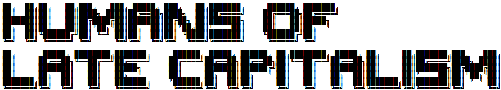

The term Late Capitalism been widely used
since the 21th century around the world to
refer to perceived absurdities, contradictions, crises, injustices, and inequality created by modern
business development.
Where does the Term "Late Capitalism" come from? Its complicated.
Late capitalism is a term that has gained widespread usage in recent years, particularly in left-wing circles.
While the term itself has no clear origin, it has come to be associated with a range of phenomena, from the rise of corporate power to the proliferation of precarious work.
At its core, late capitalism refers to the current stage of capitalist development. Unlike earlier stages of capitalism,
which were characterized by rapid expansion and growth, late capitalism is marked by stagnation, inequality, and environmental degradation.
The term is often used to describe the ways in which capitalism has evolved in the post-war period, with the growth of finance capitalism and the decline of manufacturing industries.
One of the earliest uses of the term "late capitalism" can be traced back to the work of Marxist economist Ernest Mandel,
who used the term to describe the post-war period of economic growth and political stability. According to Mandel, late capitalism was characterized by a shift towards consumerism and the commodification of culture. He argued that this shift was driven by the needs of a capitalist system that was running out of new markets to exploit.
Since Mandel's time, the term has been adopted and adapted by a wide range of thinkers and activists.
For some, it refers specifically to the neoliberal policies of the late 20th century, which saw a dismantling of the welfare state and a rise in corporate power. For others, it is a broader term that encompasses the many ways in which capitalism has failed to deliver on its promises of prosperity and progress.
One of the key features of late capitalism is the rise of precarious work. As manufacturing jobs have moved offshore,
many workers have been forced into low-paying service jobs that offer little in the way of stability or security. This has led to the rise of the gig economy, with workers taking on short-term contracts and freelancing gigs in order to make ends meet.
Another key feature of late capitalism is the growth of finance capitalism. In the past few decades,
the financial sector has become increasingly dominant, with banks and hedge funds wielding enormous power over the economy.
This has led to a rise in income inequality, as the benefits of economic growth have increasingly flowed to those at the top.
Finally, late capitalism is marked by a growing awareness of the environmental costs of economic growth.
As the world's resources are depleted and the climate changes, it is becoming increasingly clear that our current economic system is unsustainable. The challenges posed by climate change are just one example of the many ways in which capitalism has failed to deliver a better world for all.
In conclusion, the term "late capitalism" is a complex and multifaceted one, encompassing a range of economic, social, and environmental issues. While its origins can be traced back to the work of Marxist economists like Ernest Mandel, it has come to be used in a variety of ways by thinkers and activists across the political spectrum. As we confront the challenges of the 21st century, it is clear that the issues raised by late capitalism will remain central to our understanding of the world we live in.
010010001110100110110011000001101110111001010011101100110100110011000001110100110010010000101100000111000011010001110100110000011011001101000111001011011000101110110001011011101101101